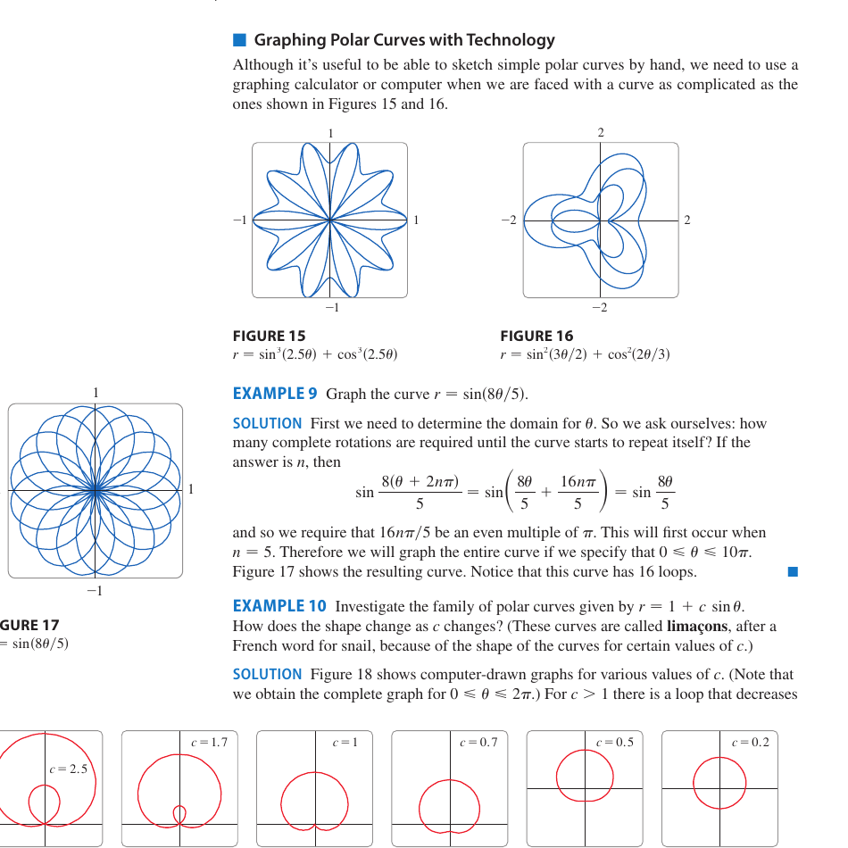

Chapter 10 · Parametric Curves and Polar Coordinates
Parametric and polar curves. Slope, arc length, and area, each in both forms. A curve in the plane is the recurring object, traced by a moving point and measured by the same Pythagoras step throughout.
10.1 Parametric Curves
1D in 2DIntro. Give both coordinates as functions of one parameter, $x = f(t)$ and $y = g(t)$. As $t$ runs over an interval the point $\bigl(f(t), g(t)\bigr)$ traces a parametric curve. An arrowhead marks increasing $t$, and reversing the parameter by replacing $t$ with $-t$, or running from $b$ to $a$, flips the arrow.
Eliminating the parameter. Solve one equation for $t$ and substitute into the other to get $y = h(x)$ or $x = h(y)$. The parametric form remembers direction and speed. The Cartesian form drops both and keeps only the shape.
Circle of radius $r$ centred at $(h,k)$. $\;x = h + r\cos t,\ y = k + r\sin t,\ 0 \le t \le 2\pi.$ Cosine and sine trace the unit circle, the factor $r$ scales it, and adding $(h, k)$ shifts the centre.
Line segment from $(x_0, y_0)$ to $(x_1, y_1)$. $\;x = x_0 + (x_1-x_0)t,\ y = y_0 + (y_1-y_0)t,\ 0 \le t \le 1.$ The point starts at $(x_0, y_0)$ and moves toward $(x_1, y_1)$, with $t$ the fraction of the trip completed.
10.2 Calculus with Parametric Curves
1D in 2DSlope. For a parametric curve $(x(t), y(t))$ with $dx/dt \ne 0$,
Why. In a tiny step the run is $dx = x'(t)\,dt$ and the rise is $dy = y'(t)\,dt$. Slope is rise over run, and the $dt$ cancels. Horizontal tangents occur where the rise vanishes but the run does not, $dy/dt = 0$ with $dx/dt \ne 0$, and vertical tangents the other way around.
Second derivative. The second derivative is the derivative of the slope, so apply the same rule with $dy/dx$ in place of $y$,
The second derivative is not $\dfrac{d^2y/dt^2}{d^2x/dt^2}$. Differentiate the slope $\dfrac{dy}{dx}$ with respect to $t$, then divide by $\dfrac{dx}{dt}$ once more.
Arc length with $f'$ and $g'$ continuous and the curve traced once on $[\alpha, \beta]$.
Why. Pythagoras on the tiny step. The legs are $dx$ and $dy$, so $ds^2 = dx^2 + dy^2 = \bigl((dx/dt)^2 + (dy/dt)^2\bigr)\,dt^2$, and adding the step lengths is the integral. The traced once condition matters because retracing a piece counts its length again.
Area under a parametric curve traversed left to right with $y \ge 0$.
Why. This is the familiar $A = \int y\,dx$, a stack of thin vertical strips of height $y$ and width $dx$, with the width rewritten along the curve as $dx = (dx/dt)\,dt$.
10.3 Polar Coordinates
1D in 2DIntro. A point $P$ in the plane is given as $(r, \theta)$ where $r = |OP|$ and $\theta$ is the angle measured from the polar axis, the positive $x$ direction. Negative $r$ is allowed, with $(-r, \theta) = (r, \theta + \pi)$.
Conversion.
Picking $\theta$ when converting to polar. Do not just set $\theta=\arctan(y/x)$. The arctangent only returns angles in $(-\tfrac\pi2,\tfrac\pi2)$, so it gives the wrong angle whenever $x<0$. Sketch the point first, or add $\pi$ to the arctangent value for second and third quadrant points, so that $\theta$ sits in the quadrant of $(x,y)$.
Common polar curves.
- Circle. $r = a$ has radius $a$, and $r = 2a\sin\theta$ passes through the origin centred on the $y$-axis.
- Cardioid. $r = 1 - \cos\theta$.
- Rose. $r = \cos n\theta$ gives $n$ petals if $n$ is odd, $2n$ if $n$ is even.
- Lemniscate. $r^2 = \cos 2\theta$, a figure eight.
- Archimedean spiral. $r = k\theta$.

10.4 Calculus in Polar Coordinates
1D in 2DTangent line. A polar curve is parametric, $x = r\cos\theta$ and $y = r\sin\theta$ with parameter $\theta$. The product rule and the slope rule of 10.2 give
Area swept by $r = f(\theta)$ from $\theta = \alpha$ to $\theta = \beta$.
A thin sector of radius $r$ and angle $d\theta$ has area $\tfrac12 r^2\,d\theta$, the wedge formula $A = \tfrac12 r^2\theta$ in miniature.
Area between two polar curves with $f(\theta) \ge g(\theta) \ge 0$.
Why. Each wedge of the outer region contributes $\tfrac12 f^2\,d\theta$ and the inner region removes $\tfrac12 g^2\,d\theta$.
Arc length in polar.
Why. In a step $d\theta$ the point moves $dr$ outward and $r\,d\theta$ sideways, two perpendicular legs, so $ds^2 = dr^2 + r^2\,d\theta^2$.
Limits for loops and petals. Integrate over exactly the $\theta$ range that traces the piece once. One petal of $r=\cos 3\theta$ runs from $\theta=-\tfrac\pi6$ to $\tfrac\pi6$ where $r\ge0$, and integrating $0$ to $2\pi$ over-counts or under-counts. When two polar curves meet, solving $f(\theta)=g(\theta)$ can miss crossings, at the pole or at points written with different $(r,\theta)$ labels, so sketch the curves before setting limits.
Worked example
Polar area between two curves. Find the area inside the cardioid $r = 1 + \sin\theta$ and outside the circle $r = 1$.
They meet where $1 + \sin\theta = 1$, so $\sin\theta = 0$, giving $\theta = 0, \pi$. On $[0, \pi]$, $\sin\theta \ge 0$, so the cardioid sits outside the circle.
$$A = \tfrac12 \int_0^\pi \bigl[(1+\sin\theta)^2 - 1^2\bigr]\,d\theta = \tfrac12 \int_0^\pi (2\sin\theta + \sin^2\theta)\,d\theta.$$
$\int_0^\pi 2\sin\theta\,d\theta = 4$, and $\int_0^\pi \sin^2\theta\,d\theta = \pi/2$ (half-angle), so $A = \tfrac12 (4 + \pi/2) = 2 + \pi/4$.
Set-up of the wedge picture. The wedge has inner radius $r$, outer radius $r + dr$, angle $d\theta$, so its area is $r\,dr\,d\theta$ (a rectangle of sides $dr$ and $r\,d\theta$). Integrating gives $A = \tfrac12 \int r^2\,d\theta$.
Practice problems
- Sketch the curve $x = t^2,\ y = t - 2$, eliminate the parameter, and find its equation in $x, y$.
- For $x = \cos t,\ y = \sin 2t$, find $dy/dx$ and the points where the tangent is horizontal or vertical.
- Find the arc length of one arch of the cycloid $x = t - \sin t,\ y = 1 - \cos t$.
- Convert the polar equation $r = 4\sin\theta$ to Cartesian form.
- Find the area enclosed by one petal of $r = \cos 3\theta$.
- Find the arc length of the cardioid $r = 1 + \cos\theta$.
Strategies
Sketching $(x(t), y(t))$. Tabulate $t$, $x$, $y$ at a few values, mark the direction of increasing $t$, and eliminate the parameter when convenient. The Cartesian curve shows the shape but drops the direction.
Polar identifications. Multiply $r = f(\theta)$ by $r$ to bring in $r^2 = x^2 + y^2$, $r\cos\theta = x$, $r\sin\theta = y$. For example $r = 2a\sin\theta$ gives $x^2 + y^2 = 2ay$, a circle.
Tangents at the pole. If $f(\theta_0) = 0$ and $f'(\theta_0) \ne 0$, the curve passes through the origin along the line $\theta = \theta_0$.
Surface area of revolution. Each piece of arc revolved about the $x$-axis sweeps a hoop of circumference $2\pi y$ and width $ds$, so $S = \int_\alpha^\beta 2\pi y\,ds$ with $ds = \sqrt{(dx/dt)^2 + (dy/dt)^2}\,dt$. About the $y$-axis the hoop radius is $x$.
Limits check. Integrate over the smallest interval that traces the curve once. Rose petals and lemniscate loops need care.